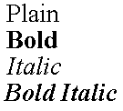
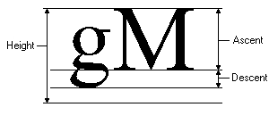

Text
A raster text using a font with styles. The position the text is drawn depends on the text alignment attribute.
The library has at least 4 standard typefaces: "System" (which depends on the driver and platform),
"Courier" (mono spaced
with serif), "Times" (proportional with serif) and "Helvetica" (proportional without serif). Each typeface can have
some styles: Plain, Bold, Italic and a combination of Bold and Italic.
As an alternative to the standard typefaces, you can use other typefaces or native driver typefaces with the function
NativeFont, but they may work in a reduced set of drivers.
You may retrieve the dimensions of the selected font with function
GetFontDim. Also you
may retrieve the bounding box of a specific text before drawing by using the
GetTextSize
and GetTextBox functions.
The text is drawn using a reference point; you can change the alignment relative to this point using the
TextAligment function.
void cdCanvasText(cdCanvas* canvas, int x, int y, const char* text); [in C]
void cdfCanvasText(cdCanvas* canvas, double x, double y, const char* text); [in C]
void wdCanvasText(cdCanvas* canvas, double x, double y, const char* text); (WC) [in C]
canvas:Text(x, y: number, text: string) [in Lua]
canvas:fText(x, y: number, text: string) [in Lua]
canvas:wText(x, y: number, text: string) (WC) [in Lua]
Draws a text in the position (x,y) according to the current font and
text alignment. It expects an ANSI string. Can have line breaks.
Attributes
void cdCanvasFont(cdCanvas* canvas, const char* typeface, int style, int size); [in C]
void wdCanvasFont(cdCanvas* canvas, const char* typeface, int style, double size); (WD) [in C]
canvas:Font(typeface, style, size: number) [in Lua]
canvas:wFont(typeface, style, size: number) (WD) [in Lua]
Selects a text font. The font type can be one of the standard type faces or
other driver dependent type face. Since font face names are not a standard
between drivers, a few names are specially handled to improve application
portability. If you want to use names that work for all systems we recommend
using: "Courier", "Times" and "Helvetica".
The style can be a combination of: CD_PLAIN,
CD_BOLD, CD_ITALIC, CD_UNDERLINE
or CD_STRIKEOUT. Only the Windows and PDF drivers support underline and
strikeout. The size is provided in points (1/72 inch) or in pixels (using
negative values).
Default values: "System", CD_PLAIN, 12.
You can specify partial parameters using NULL, -1 and 0 for typeface, style
and size. When these parameters are specified the current font parameter is
used. For example: CanvasFont(NULL, -1, 10) will only change the font
size.
To convert between pixels and points use the function
cdPixel2MM
to convert from pixels to millimeters and use the formula "(value in points) = CD_MM2PT *
(value in millimeters)".
In WC, the size is specified in millimeters, but is internally converted to points.
Fonts can heavily benefit from the ANTIALIAS attribute where available in the
driver.
|
Type Faces
 |
Font Styles
 |
void cdCanvasGetFont(cdCanvas* canvas, char* typeface, int *style, int *size); [in C]
void wdCanvasGetFont(cdCanvas* canvas, char* typeface, int *style, double *size); (WC) [in C]
canvas:GetFont() -> (typeface: string, style, size: number) [in Lua]
canvas:wGetFont() -> (typeface: string, style, size: number) (WC) [in Lua]
Returns the values of the current font. It is not necessary to provide all
return pointers; you can provide only the desired values.
In WC, the size is returned in millimeters.
char* cdCanvasNativeFont(cdCanvas* canvas, const char* nativefont); [in C]
canvas:NativeFont(font: string) -> (old_font: string) [in Lua]
Selects a font based on a string description. The description can depend on the driver
and the platform, but a common definition is available for all drivers. It
does not need to be stored by the application, as it is internally replicated
by the library. The string is case sensitive. It returns the previous string.
The string is parsed and the font typeface, style and size are set according
to the parsed values, as if cdCanvasFont was called. The native font string is
cleared when a font is set
using cdCanvasFont.
The common format definition is similar to the the
Pango library Font Description, used by GTK+2. It is defined as having 3 parts: <font
family>, <font styles> <font size>. For ex: "Times, Bold 18", or
"Arial,Helvetica, Italic Underline -24". The supported styles include:
Bold, Italic, Underline and Strikeout. Underline, Strikeout, and negative
pixel values are not supported by the standard Pango Font Description. The Pango
format include many other definitions not supported by the CD format, they are
just ignored.
The IUP "FONT" attribute internal formats are also accepted in all drivers
and platforms.
Using "NULL" as a parameter, it only returns the previous string and does not change the font. The value returned
is the last attributed value, which may not correspond exactly to the font selected by the driver.
Using "(char*)CD_QUERY" as a parameter, it returns the current selected
font in the common format definition.
int cdCanvasTextAlignment(cdCanvas* canvas, int alignment); [in C]
canvas:TextAlignment(alignment: number) -> (old_alignment: number) [in Lua]
Defines the vertical and horizontal alignment of a text as: CD_NORTH, CD_SOUTH,
CD_EAST, CD_WEST, CD_NORTH_EAST, CD_NORTH_WEST,
CD_SOUTH_EAST, CD_SOUTH_WEST, CD_CENTER, CD_BASE_LEFT,
CD_BASE_CENTER, or CD_BASE_RIGHT. Returns the previous value. Default value:
CD_BASE_LEFT. Value CD_QUERY simply returns the current value.
Text Alignment

double cdCanvasTextOrientation(cdCanvas* canvas, double angle); [in C]
canvas:TextOrientation(angle: number) -> (old_angle: number) [in Lua]
Defines the text orientation, which is an angle provided in degrees relative to the horizontal line according to
which the text is drawn. Returns the previous value. Value CD_QUERY simply returns the current value.
The default value is 0.
Properties
void cdCanvasGetFontDim(cdCanvas* canvas, int *max_width, int *height, int *ascent, int *descent); [in C]
void wdCanvasGetFontDim(cdCanvas* canvas, double *max_width, double *height, double *ascent, double *descent); (WC) [in C]
canvas:GetFontDim() -> (max_width, height, ascent, descent: number) [in Lua]
canvas:wGetFontDim() -> (max_width, height, ascent, descent: number) (WC) [in Lua]
Returns the maximum width of a character, the line's height, the ascent and descent of the
characters of the currently selected font. The line's height is the sum of the
ascent and descent of a
given additional space (if this is the case). All values are given in pixels
and are positive. It is not necessary to provide all return pointers, you can provide only
the desired values and NULL for the others.
Font Dimension Attributes

void cdCanvasGetTextSize(cdCanvas* canvas, const char* text, int *width, int *height); [in C]
void wdCanvasGetTextSize(cdCanvas* canvas, const char* text, double *width, double *height); (WC) [in C]
canvas:GetTextSize(text: string) -> (width, heigth: number) [in Lua]
canvas:wGetTextSize(text: string) -> (width, heigth: number) (WC) [in Lua]
Returns the text size independent from orientation. It is
not necessary to provide all return pointers, you can provide only the desired
values and NULL for the others.
void cdCanvasGetTextBounds(cdCanvas* canvas, int x, int y, const char *text, int *rect); [in C]
void cdfCanvasGetTextBounds(cdCanvas* canvas, double x, double y, const char* text, double *rect); [in C]
void wdCanvasGetTextBounds(cdCanvas* canvas, double x, double y, const char* text, double *rect); (WC) [in C]
canvas:GetTextBounds(x, y: number, text: string) -> (rect: table) [in Lua]
canvas:fGetTextBounds(x, y: number, text: string) -> (rect: table) [in Lua]
canvas:wGetTextBounds(x, y: number, text: string) -> (rect: table) (WC) [in Lua]
Returns the oriented bounding rectangle occupied by a text at a given
position. The rectangle has the same dimentions returned by
GetTextSize. The rectangle corners are returned in counter-clock wise
order starting with the bottom left corner, arranged (x0,y0,x1,y1,x2,y2,x3,y3).
void cdCanvasGetTextBox(cdCanvas* canvas, int x, int y, const char* text, int *xmin, int *xmax, int *ymin, int *ymax); [in C]
void cdfCanvasGetTextBox(cdCanvas* canvas, double x, double y, const char* text, double *xmin, double *xmax, double *ymin, double *ymax); [in C]
void wdCanvasGetTextBox(cdCanvas* canvas, double x, double y, const char* text, double *xmin, double *xmax, double *ymin, double *ymax); (WC) [in C]
canvas:GetTextBox(x, y: number, text: string) -> (xmin, xmax, ymin, ymax: number) [in Lua]
canvas:fGetTextBox(x, y: number, text: string) -> (xmin, xmax, ymin, ymax: number) [in Lua]
canvas:wGetTextBox(x, y: number, text: string) -> (xmin, xmax, ymin, ymax: number) (WC) [in Lua]
Returns the horizontal bounding rectangle occupied by a text at a given
position. If orientation is not 0 then its area is always larger than the
area of the rectangle returned by GetTextBounds. It is not necessary
to provide all return pointers, you can provide only the desired values and NULL for the others.